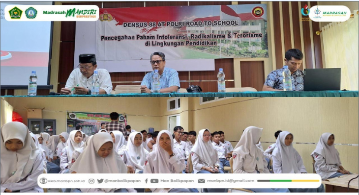

09 November 2023 by Antung SF

Balikpapan (Madrasah) - Tim Densus 88 AT Polri melaksanakan Sosialisasi Pencegahan Paham Intoleransi, Radikalisme, dan Terorisme di Lingkungan Pendidikan, diikuti seluruh siswa/i kelas XII Kampus 2 Madinah MAN Balikpapan oleh Bapak IPTU Andi Husin Susidi selaku Katim 1 Densus Satgaswil Kaltim didampingi langsung Wakil Kepala Madrasah Bagian Kesiswaan MAN Balikpapan Bapak Drs. Ruslan Hamzah.
Sosialisasi memaparkan tentang definisi paham intoleransi, radikalisme, dan terorisme di lingkungan pendidikan, pencegahan, serta peranan anak muda dalam menghadapi paham tersebut Selasa (7/11/2023).
Sikap intoleransi merupakan bentuk pengingkaran terhadap kebinekaan dan bertentangan denagn nilai-nilai Pancasila maupun norma-norma agama yang beradap, sedangkangkan radikalisme adalah pemahaman dan atau perilaku menggunakan kekerasasn dalam menyikapi perbedaan, memecahkan masalah, atau mencapai tujuan.
Adapun pencegahannya dilakukan dengan cara bijak dalam bersosmed, penguatan Wasbang (Pancasila, UUD 45, NKRI, Bhineka Tunggal Ika), dan penguatan moderasi beragama atau menganggap agama kita adalah yang paling benar.
“Alhamdulillah, kegiatan Sosialisasi berlangsung dengan lancar tanpa adanya kendala apapun. Semoga siswa/i MAN Balikpapan dapat memahami dan mengaplikasikannya dalam kehidupan sehari-hari”. ucap Bapak Drs. Ruslan Hamzah.
Sosialisasi dilaksanakan dengan lancar dan kondusif serta di akhiri dengan sesi pertanyaan dan pembagian hadiah bagi siswa yang aktif bertanya. (nayla)